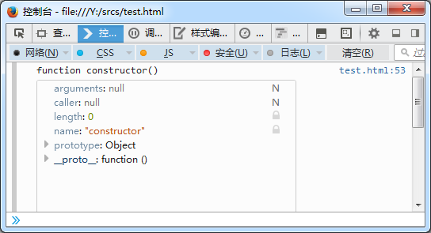

[本内容只针对 ExtJS 4.x 和 ExtJS 5.x 版本]
JavaScript 是一门富有表现力的编程语言，它既可以进行面向对象编程(OOP)，也可以进行函数式编程(FP)。函数是 JavaScript 的一等公民。面向对象编程风格相对要简单一些，这也是 ExtJS 的选择。
传统方式 我们先来看一下传统的使用 JavaScript 实现 OOP 的代码：
1 2 3 4 5 6 7 8 9 10 11 12 13 14 var Programmer = function ( this .lang = 'java' ; this .name = '' ; }; Programmer.prototype = { isProgrammer: true , setName: function (name ) this .name = name; }, program: function ( console .log(this .name + ' codes in ' + this .lang + '.' ); } };
我们借用函数对象模拟出“类“的概念，并创建了 Programmer 类。同时，给此类增加了两个属性： name 和 lang 。紧接着，我们在 Programmer 的原型对象上增加了 isProgrammer 属性和 setName 、program 方法(函数对象的属性与原型对象的属性是有区别的，但不在本教程的讨论范围)。
现在来看看如何创建 Programmer 的实例并调用其方法：
1 2 3 4 5 var zhangsan = new Programmer();zhangsan.setName('ZhangSan' ); if (zhangsan.isProgrammer) { zhangsan.program(); }
控制台将打印出：
这看上去并不难。那么如果我们想模拟出“子类”及“继承”的概念呢？我想先给你看一下它的代码实现：
1 2 3 4 5 6 7 8 9 10 var Geek = function ( Geek.superclass.constructor.call(this ); this .niubility = true ; }; Geek.prototype = new Programmer(); Geek.superclass = Programmer.prototype; Geek.prototype.superSkill = function ( return 'kill himself.' ; };
我们实现了 Programmer 的子类 Geek 并为其扩展了 niubility 属性和 superSkill 方法。这里将 Geek 的原型指向 Programmer 的一个实例，以此来获得 Programmer 上的所有属性及方法。除此之外，我们还将 Geek 的 superclass 指向 Programmer.prototype ，这么一来便可以通过 superclass 引用调用并继承父类方法。
如果上面的代码对你来说并不容易理解，那么你可能需要补充一下 JavaScript 的基础知识。虽然 ExtJS 为我们隐藏了诸多实现细节，但若想有所提高并了解 ExtJS 的工作原理，准确理解以上代码是极为必要的。更多 JavaScript 面向对象编程的知识，我推荐你阅读MDN相关文档 。
接下来构造一个 Geek 实例并调用其方法：
1 2 3 4 5 6 7 8 var lisi = new Geek();lisi.setName('LiSi' ); lisi.lang = 'JavaScript' ; if (lisi.isProgrammer && lisi.niubility) { lisi.program(); console .log(lisi.name + ' can ' + lisi.superSkill()); }
控制台将打印出：
1 2 LiSi codes in JavaScript. LiSi can kill himself.
ExtJS的方式 从上一小节可以看出，传统的面向对象编程方式稍有些复杂，而且代码较为分散，继承关系也不直观。ExtJS 为了克服此问题，在 4.0+ 版本中引入了全新的类系统。让我们先来看看如何用 ExtJS 的方式实现上一节的例子：
1 2 3 4 5 6 7 8 9 10 11 12 13 14 15 16 17 18 19 Ext.define('Programmer' , { isProgrammer: true , constructor: function ( this .lang = 'java' ; this .name = '' ; }, setName: function (name ) this .name = name; }, program: function ( console .log(this .name + ' codes in ' + this .lang + '.' ); } }); var zhangsan = Ext.create('Programmer' );zhangsan.setName('ZhangSan' ); if (zhangsan.isProgrammer) { zhangsan.program(); }
实现继承关系也非常简单直观，来看子类的代码：
1 2 3 4 5 6 7 8 9 10 11 12 13 14 15 16 17 18 19 Ext.define('Geek' , { extend: 'Programmer' , constructor: function ( this .callParent(); this .niubility = true ; }, superSkill: function ( return 'kill himself.' ; } }); var lisi = Ext.create('Geek' );lisi.setName('LiSi' ); lisi.lang = 'JavaScript' ; if (lisi.isProgrammer && lisi.niubility) { lisi.program(); console .log(lisi.name + ' can ' + lisi.superSkill()); }
可以看出，ExtJS 类系统的核心即为 Ext.define 函数，熟悉 Java 的开发人员可以将其理解为 ExtJS 的定义类的语法。继承关系则可以通过 extend 属性指定。从 4.0+ 版本开始，ExtJS 整个框架都基于 Ext.define 来构建，除了继承以外，该方法还实现了其它诸多类系统特性，让我们通过代码的方式展示一下 Ext.define 的用法。
Ext.define的用法 1.定义一个类 正如前面看到的，Ext.define 可以用来定义一个类：
1 2 3 4 5 6 7 8 9 10 11 12 13 14 Ext.define('Programmer' , { constructor: function (language ) if (language) { this .language = language; } }, language: '[default]' , code: function ( return ('I\'m coding in ' + this .language + '.' ); } }); var zhangsan = new Programmer('Java' );console .log(zhangsan.code());
2.继承 还有继承：
1 2 3 4 5 6 7 8 9 10 11 12 13 Ext.define('JavaScripter' , { extend: 'Programmer' , constructor: function (skilled ) this .skilled = skilled || '' ; this .callParent(['JavaScript' ]); }, skill: function ( return (this .code() + 'I am good at ' + this .skilled + '.' ); } }); var lisi = new JavaScripter('ExtJS' );console .log(lisi.skill());
继承使用 extend 属性实现，在构造器或方法中，通过 this.callParent() 以调用父类方法。
3.Config 定义在 config 中的属性会自动生成 getters/setters：
1 2 3 4 5 6 7 8 9 10 11 12 13 14 15 16 17 18 19 20 21 Ext.define('Programmer' , { constructor: function (config ) this .initConfig(config); }, config: { language: '' , isGeek: false , hasMoney: false } }); var zhangsan = new Programmer({ language: 'JavaScript' , isGeek: true }); console .log(zhangsan.getLanguage());console .log(zhangsan.getHasMoney());console .log(zhangsan.hasMoney);console .dir(zhangsan);
执行结果如下：
需要注意 的是，如果不是继承自现有组件，而是自己定义新类，需要在 constructor 中明确调用 initConfig() 方法。
ExtJS 框架并没有对 isXxx 、hasXxx 方法做特殊处理，即示例中默认并不存在 isGeek() 方法，可以访问 isGee 属性获得其值。然而，isXxx 属性通常更适合作为类的成员对象(属性)，不需放入config中。
对于 config 中的属性 foo, 框架还会为其自动生成 applyFoo() 和 updateFoo() 方法，这两个方法分别作为 setFoo() 的前置和后置方法被调用，具体使用说明可参考相应API文档。
4.Statics 和 InheritableStatics 1 2 3 4 5 6 7 8 9 10 11 12 13 14 15 16 17 Ext.define('Computer' , { statics: { factory: function (brand ) return new this (brand); } }, constructor: function (brand ) this .brand = brand || '' ; }， foo: function ( } }); var thinkComputer = Computer.factory('Thinkpad' );console .log(thinkComputer.brand);
关于静态方法，你需要知道：
在statics方法中，this 指向类本身;
在其它成员方法中，this.statics() 可以引用到当前类；
statics对象中的属性/方法，不会被 extend 或 mixin，如有此需求，可使用 InheritableStatics .
5.Mixins ExtJS 提供了掺和模式的实现：
1 2 3 4 5 6 7 8 9 10 11 12 13 14 15 Ext.define('CanSing' , { sing: function ( console .log("I'm on the highway to hell..." ); } }); Ext.define('Musician' , { mixins: ['CanSing' ], eat: function ( console .log("Everyone is able to eat." ); } }) new Musician().eat(); new Musician().sing();
你应该通过掺和模式合理的拆分一些较大的类，将其中可共用的行为方法拆分出去。例如你在设计一个Web界面模板类，它可以保存新数据，也可以删除已有数据，另外还有可能会包含数据修改、数据导入导出、查询检索等等一系列操作。你当然可以设计一个大而全的类来实现所有功能，如果某一特殊场景中不需要“导入导出”功能则通过子类将对应功能入口“弱化”掉。这个设计很糟糕，维护这个大类会让人疯狂，尤其面对新的功能扩展时。
聪明一些的办法则可以通过继承层级划分，在基类中实现“基本功能”并在子类中扩展其它功能。然而我们的例子中如何划分子类呢？它有太多可能的功能组合。你肯定已经想到，掺和模式可以解决此类问题。
mixins 背后的思想即是通过聚合 而非继承的方式为某类型扩展行为能力。
下面展示一个稍复杂的例子，更多的用法希望你通过API文档自行学习：
1 2 3 4 5 6 7 8 9 10 11 12 13 14 15 16 17 18 19 20 21 22 23 24 25 26 27 28 29 30 31 32 33 34 35 36 37 38 39 40 41 42 43 44 Ext.define('Jqueryable' , { skill: 'jQuery' }); Ext.define('Extjsable' , { skill: function ( return 'ExtJS' ; } }); Ext.define('Seajsable' , { cmd: 'Seajs' }); Ext.define('JavaScripter' , { extend: 'Programmer' , constructor: function (skilled ) this .skilled = skilled || '' ; this .callParent(['JavaScript' ]); }, mixins: { writejQuery: 'Jqueryable' , writeExtjs: 'Extjsable' , writeSeajs: 'Seajsable' }, skill: function ( return [ this .code(), 'I am good at ' , this .mixins.writejQuery.skill, ',' , this .mixins.writeExtjs.skill(), ',' , this .mixins.writeSeajs.cmd, '.' ].join('' ); } }); var lisi = new JavaScripter('ExtJS' );console .log(lisi.skill());
6.保留私有作用域空间 接下来要展示的代码你应该一看就明白它的用意为何，如下：
1 2 3 4 5 6 Ext.define('Foo' , function ( return { } });
类似的代码结构在使用 ExtJS 之前，你已经无数次使用了。通过给 Ext.define 第二个参数传函数参数的方式，可以在函数中保留私有作用域空间。如果返回对象的属性中包含override等需要预处理的类，必须将上面的函数改为立即执行的方式：
1 2 3 4 5 6 7 Ext.define('Foo' , function ( return { override: 'Ext.Component' , } }());
唯一需要再次好心叮嘱你的是，使用这种方式一定要注意保证函数造成的闭包空间中，引用到的任何变量一定要能够在合适的时机被GC处理。
来看一个该用法的示例(注意函数中传入了参数)：
1 2 3 4 5 6 7 8 9 10 11 12 13 14 Ext.define('Bar' , function (bar ) return { statics: { id: 0 , nextId: function ( return ++bar.id; } }, }; }); console .log(Bar.nextId()); console .log(Bar.nextId());
7.定义匿名类 可能没太大用处，Ext.define 可以用来定义匿名类，将类名设为 null 即可：
1 2 3 4 5 6 7 var Foo = Ext.define(null , { constructor: function ( this .name = '[ anonymous class ]' ; } }); console .log(new Foo().name);
8.单例模式 只需将 singleton 属性设置为 true 即可：
1 2 3 4 5 6 Ext.define('Logger' , { singleton: true , log: function (msg ) console .log(msg); } });
9.覆盖 通过 override 属性可以替换掉父类的方法，也可以为其增加新方法(详细的用法请参考API文档，毕竟本教程并非为了介绍API文档而作)。值得一提的是，它有一些很实用的场景，例如，拆分巨大的类 ：
1 2 3 4 5 6 7 8 9 10 11 12 13 14 15 16 17 18 19 20 21 22 23 24 25 26 27 28 29 30 31 32 33 34 35 36 37 38 39 40 41 Ext.define('MyLargeClass' , { constructor: function (config ) this .initConfig(config); }, config: { name: null } }); Ext.define('MyLargeClass.part1' , { override: 'MyLargeClass' , constructor: function ( this .callParent(arguments ); }, jump: function ( console .log(this .name + ' jumps!' ); }, code: function ( console .log(this .name + ' is coding in javascript!' ); } }); Ext.define('MyLargeClass.part2' , { override: 'MyLargeClass' , sing: function ( console .log(this .name + ' sings a song!' ); }, code: function ( console .log(this .name + ' is coding in java!' ); } }); var largeClass = new MyLargeClass({name: 'ZhangSan' });largeClass.jump(); largeClass.sing(); largeClass.code();
实际应用时，当一个类方法特别特别特别多时(巨大的类)，可以进行合理拆分。同时，结合动态类加载机制，将不同的部分part1、part2放在不同的JS源文件中，主类定义中使用 requires 引用所有的部分。
Ext.define 还提供了定义别名、动态加载、定义向下兼容的类名等多种功能用法，不再一一叙述。
深入一些 ExtJS 类系统提供了这么多花哨的功能，怎么实现的呢？下面的内容我将带着你一步一步深入学习 ExtJS 类系统的实现过程。
ExtJS 在定义类的时候，基本思路为：
提供一个基类 Ext.Base，所有类继承自此，在此类中定义所有类共有的属性(function对象的属性，亦即所谓静态属性)；
提供 Ext.Class 类，完成类定义后的前置处理；
提供 Ext.ClassManager 单例，负责管理框架内的类。Ext.define方法的实际实现也源于此，同时实际的后置处理方法也在此实现；
提供 Ext.Loader 单例，负责类的动态加载。同时，加载相关的前置处理方法在此实现。
动态加载的内容将单独讲解，不在此讨论。
我剥离出实现类定义的骨干代码 ，先来看看：
1 2 3 4 5 6 7 8 9 10 11 12 13 14 15 16 17 18 19 20 21 22 23 24 var Ext = {};function mkCtor ( return function constructor ( return this .constructor.apply(this , arguments ) || null ; }; } Ext.Class = function (Class ) return Class; }; Ext.ClassManager = { create: function (className ) var ctor = mkCtor(); return new Ext.Class(ctor); } }; Ext.define = function ( return Ext.ClassManager.create.apply(Ext.ClassManager, arguments ); }; console .dir(Ext.define('Foo' ));
控制台将打印出：

从代码中可以看出， Ext.define 通过调用 Ext.ClassManager.create 方法，实际生成的是 Ext.Class 的实例，即 new Ext.Class(ctor);。而根据 new 操作符的特性，当创建 Ext.Class 时实际创建的将是传入的函数对象，即执行 makeCtor() 后生成的 constructor 函数对象。
于是可以知道，ExtJS 类系统实质上创建的都是 makeCtor 函数中的 constructor 对象，其内部只是继续调用当前(this)配置中的 constructor 属性所指向的函数，这么做的好处便是：所得到的 constructor 的原生链非常干净，没有其它多余的属性，同时便于在这一过程中为生成的对象增加属性、做预处理等。
明白了以上基础代码结构，现在来加个 Ext.Base 类，同时我们实现一个极度简化版的 addMembers 方法(该方法的使用说明参见API文档)和私有属性 $isClass ：
1 2 3 4 5 6 7 8 9 10 11 Ext.Base = function ( Ext.Base.$isClass = true ; Ext.Base.addMembers = function (members ) var i, member; for (i in members) { if (members.hasOwnProperty(i)) { member = members[i]; this .prototype[i] = member; } } };
接下来改造一下 Ext.Class ：
1 2 3 4 5 6 7 8 9 Ext.Class = function (Class, data ) var name; for (name in Ext.Base) { if (Ext.Base.hasOwnProperty(name)) { Class[name] = Ext.Base[name]; } } return Class; };
执行代码，控制台将打印出：
现在，我们的 Foo 类已经获取到 Ext.Base 中的方法了。改变打印输出代码，来用一下新方法：
1 2 3 4 5 6 7 8 var Foo = Ext.define('Foo' );Foo.addMembers({ name: 'foo name' , foo: function ( console .log('I\'m foo' ); } }); console .dir(Foo);
可以看到结果如下，我们成功地给 Foo 增加了原型方法：
现在把 addMembers 放到我们的框架代码内部调用，并增加 $className 属性，以此表示我们已经有能力按需要扩展所定义的类的属性，于是得到如下相对完整的代码 ：
1 2 3 4 5 6 7 8 9 10 11 12 13 14 15 16 17 18 19 20 21 22 23 24 25 26 27 28 29 30 31 32 33 34 35 36 37 38 39 40 41 42 43 44 45 46 47 48 49 var Ext = {};function mkCtor ( return function constructor ( return this .constructor.apply(this , arguments ) || null ; }; } Ext.Base = function ( Ext.Base.$isClass = true ; Ext.Base.addMembers = function (members ) var i, member; for (i in members) { if (members.hasOwnProperty(i)) { member = members[i]; this .prototype[i] = member; } } }; Ext.Class = function (Class, data ) var name; for (name in Ext.Base) { if (Ext.Base.hasOwnProperty(name)) { Class[name] = Ext.Base[name]; } } Class.addMembers(data); return Class; }; Ext.ClassManager = { create: function (className, data ) var ctor = mkCtor(); data && (data.$className = className); return new Ext.Class(ctor, data); } }; Ext.define = function ( return Ext.ClassManager.create.apply(Ext.ClassManager, arguments ); }; console .dir(Ext.define('Foo' , { name: 'foo name' , foo: function ( console .log('I\'m foo' ); } }));
结果如我们所愿：
预处理器 现在我们已经有了 ExtJS 类系统基本的代码结构，并能为生成的类提供附加的属性。那么，Ext.define 中诸多的功能特性又是怎么实现的呢，例如 extend 、statics、mixins 等？答案就是：预处理器。
ExtJS 的预处理器分为 前置处理器 (在类构造前做一些事情)和 后置处理器 (在类构造成功后正式使用前做一些事情)。前置处理器放在 Ext.Class 对象中，后置处理器放在 Ext.ClassManager 对象中。如果你熟悉 Nodejs 的 Express 框架或是 Python 的 django 框架，ExtJS 预处理器的设计理念对你来说 so easy, 来看看吧。
我们先来自己实现它。预处理器至少需要三部分组成：
盛放处理器的容器
注册处理器的方法
执行处理器具体处理过程的方法
先来解决第一个问题：我们用数组 [] 表示容器，用形如 {name: '处理器名称', fn: 执行的处理方法} 的对象表示一个处理器。容器就分别叫做 preprocessors 和 postprocessors 吧。之后，注册方法就对应地叫做 registerPreprocessor 和 registerPostprocessor ; 执行方法叫 doPreprocessor 和 doPostprocessor 。
我说了这么多废话，你一看前置处理器的骨干代码，发现“原来如此简单”：
1 2 3 4 5 6 7 8 9 10 11 12 13 14 Ext.Class.preprocessors = []; Ext.Class.registerPreprocessor = function (name, fn ) Ext.Class.preprocessors.push({ name: name, fn: fn }); }; Ext.Class.doPreprocessor = function ( var i, len, pre = Ext.Class.preprocessors; for (i = 0 , len = pre.length; i < len; ++i) { pre[i].fn.call(Ext.Class); } };
我们在 ExtClass 中加个 preprocessors 数组，注册方法是往数组里放处理器，执行方法则是把数组里的所有处理器取出来调用一下。就是这么简单！对应的后置处理器完全相同：
1 2 3 4 5 6 7 8 9 10 11 12 13 14 Ext.ClassManager.postprocessors = []; Ext.ClassManager.registerPostprocessor = function (name, fn ) Ext.ClassManager.postprocessors.push({ name: name, fn: fn }); }; Ext.ClassManager.doPostprocessor = function ( var i, len, post = Ext.ClassManager.postprocessors; for (i = 0 , len = post.length; i < len; ++i) { post[i].fn.call(Ext.Class); } };
处理器有了，调用一下吧。现在改造 Ext.Class ，把已有的代码移到 create 方法中，并为其增加 onCreated 参数，以便回调后置处理器：
1 2 3 4 5 6 7 8 9 10 11 12 13 14 15 16 Ext.Class = function (Class, data, onCreated ) Ext.Class.create(Class, data); Ext.Class.doPreprocessor(Class, data); Class.addMembers(data); onCreated.call(Class, Class); return Class; }; Ext.Class.create = function (Class, data ) var name; for (name in Ext.Base) { if (Ext.Base.hasOwnProperty(name)) { Class[name] = Ext.Base[name]; } } };
相应地，加上后置回调函数并在其中调用后置处理器的执行方法：
1 2 3 4 5 6 7 Ext.ClassManager.create = function (className, data ) var ctor = mkCtor(); data && (data.$className = className); return new Ext.Class(ctor, data, function ( Ext.ClassManager.doPostprocessor(); }); };
就是这么简单，快注册几个处理器试试吧：
1 2 3 4 5 6 7 8 9 10 11 Ext.Class.registerPreprocessor('jump' , function ( console .log('I can jump high!' ); }); Ext.Class.registerPreprocessor('swim' , function ( console .log('I can swim fast!' ); }); Ext.ClassManager.registerPostprocessor('rest' , function ( console .log('I have to take a break!' ); }); Ext.define('Qiang' );
此时可以看到，当我们定义一个新类( 'Qiang' )时，各预处理器被执行：
其实，ExtJS 实现前置处理器和后置处理器的过程是非常复杂的，不过思路却极为简单，正如我们刚刚看到的。在我们的代码基础上，还可以增加很多辅助方法，例如，调整已注册的处理器顺序、增加更多的钩子方法、注册事件并触发等等。事实上 ExtJS 正是这么做的，它还为我们提供了很多优秀的处理器，不像我们的示例代码只是粗糙的 console.log ，它们非常强大，它们正是之前介绍的 Ext.define 诸多功能的实际实现：
就此结束了吗？ 还不够，我们应该只处理用户指定的处理器，如下面的调用只执行 swim 处理器：
1 2 3 Ext.define('Swimmer' , { swim: 'very fast!' });
另外，Ext.define 创建出的类，只是通过字符串静态指定的类名，我们还应该把它放入全局变量中，同时为其处理好命名空间问题，以便可以直接调用它。
还有一大堆需要实现的 API 方法，还有无数的细节需要处理。
我对 ExtJS 系统的讲解结束了，而我希望对你仅仅是开始，希望我的分析讲解可以帮你更深入地理解 ExtJS 类系统，更便于你理解它的源码，更便于你使用、扩展它。